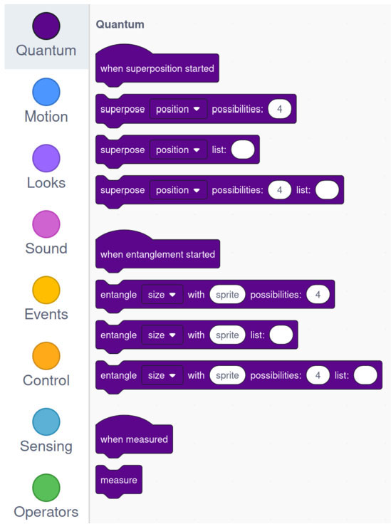
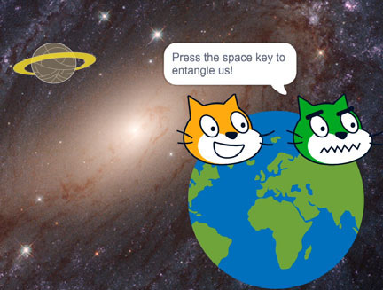
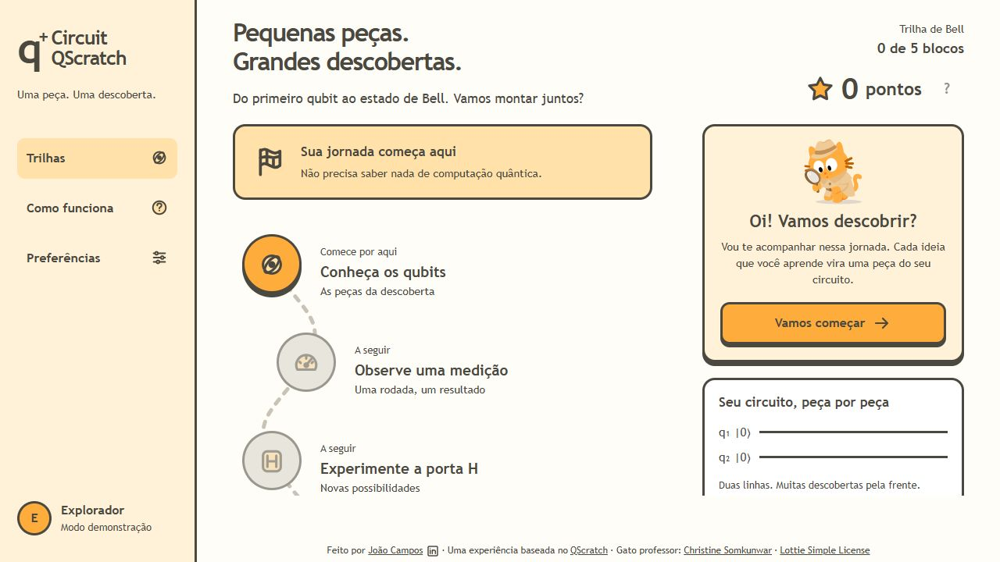
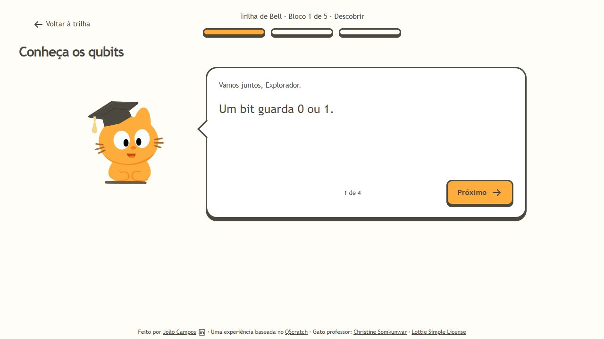

Uma trilha para aprender a construir
um circuito quântico
Inspirado no QScratch · Prévia interativa · Novembro de 2026
Uma extensão do Scratch que apresenta conceitos quânticos por meio de blocos.
Superposição, emaranhamento e medição são representados nas propriedades dos personagens.
O estudo piloto envolveu 68 estudantes de Engenharia Química.


Escanez-Exposito et al., 2025 · doi.org/10.1140/epjqt/s40507-025-00314-9
Uma prévia web com cinco blocos para descobrir e montar o circuito de Bell.
Um mascote orienta a experiência. A execução será uma simulação em computador clássico.
Uma sequência de desafios curtos, inspirada no modelo de trilha do Duolingo.
A prévia já reúne cinco blocos, desbloqueio gradual, quizzes, dicas e pontos de demonstração.
O mascote acompanha as explicações. Sons e animações podem ser ajustados nas preferências.

A experiência e seus efeitos serão avaliados durante a pesquisa.

O professor apresenta uma ideia por vez.
Depois, a pessoa responde ao quiz e realiza a prática.
A montagem aceita arraste ou seleção das peças.
A escolaridade orienta a linguagem e a profundidade das explicações.
O circuito é o mesmo. A escolha poderá ser alterada e não define o conhecimento prévio da pessoa.
Na base computacional:
00 ou 11, com 50% de probabilidade ideal para cada resultado.
Com dois qubits, o circuito apresenta superposição, portas quânticas, emaranhamento e medição.
Cinco blocos com explicações, perguntas, dicas e avanço gradual.
Encaixes, H, CNOT e medição pelo modelo ideal de Bell.
Mascotes animados, sons, preferências e pontos de demonstração.
Próximos passos: conta individual, salvamento online e avaliação com participantes.
Nesta prévia, o progresso existe apenas durante a sessão. Supabase ainda não está integrado.
Conferir portas, estado e probabilidades com uma referência independente.
Observar a navegação e a montagem com participantes disponíveis.
Investigar as explicações e a curiosidade com instrumentos adequados ao público.
Como a trilha pode apresentar o circuito de Bell a iniciantes do Fundamental Anos Finais e Ensino Médio?
A avaliação depende de acesso aos participantes e das condições institucionais. A proposta ainda está em desenvolvimento. Créditos e licenças